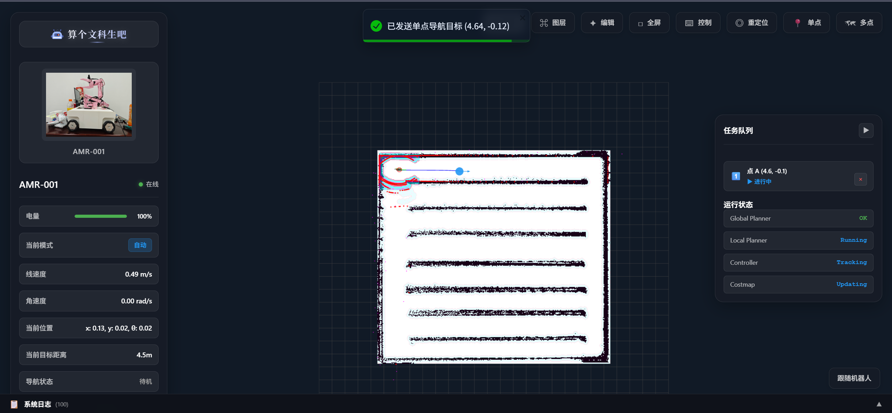
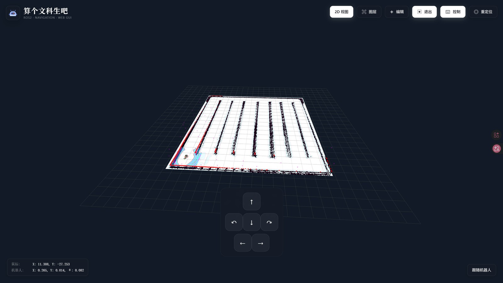

What It Does
项目做的是什么
- React/TypeScript 前端，通过 WebSocket/rosbridge 接入 ROS/ROS2 数据。
- 支持地图、激光、点云、路径、机器人模型等图层化可视化。
- 面向真车调试，把单点/多点导航、重定位、手动控制和系统状态放到统一界面。
VLN Relation
和当前 VLN 主线的关系
VLN 实验需要快速标注目标、触发任务和回看状态，Web 控制台是人机协同调试入口。
Craft Record
工程痕迹
这个项目保留了从硬件选型、结构验证、驱动调试、话题链路到现场反馈的连续记录。页面里放的不是单独的效果截图，而是一段可回溯的迭代线索。
Media
关键画面



README Snapshot
README / 项目说明片段
🤖 算个文科生吧 · AMR 控制台
基于 Web 技术的机器人控制与可视化平台
---
🎯 项目简介
AMR 控制台 是一个基于 Web 技术的机器人控制与可视化平台，专为自主移动机器人（AMR）设计。通过 WebSocket 连接 ROS 系统，提供实时 3D 可视化、地图编辑、导航控制、任务管理等核心功能，让机器人操作变得直观高效。
✨ 核心优势
| 特性 | 说明 |
|:----:|:----|
| 🌐 **零安装部署** | 纯 Web 应用，无需安装客户端 |
| 🎨 **现代化 UI** | 基于 React 19 构建的响应式界面 |
| 🚀 **高性能渲染** | Three.js 驱动的实时 3D 可视化 |
| 🔌 **ROS 集成** | 完整的 ROS/ROS2 消息支持 |
| 🎛️ **灵活配置** | 可自定义的图层系统和主题 |
---
📸 界面预览
登录页面
主界面
---
✨ 功能特性
🗺️ 地图可视化
- 多图层系统 - 支持栅格地图、代价地图、激光扫描、点云、路径等多种图层
- 2D/3D 视图切换 - 灵活的视角切换，满足不同场景需求
- 实时更新 - 基于 WebSocket 的实时数据流，低延迟可视化
- 图层管理 - 独立的图层控制面板，支持显示/隐藏、透明度、颜色等配置
<em>建图功能界面</em>
🎮 机器人控制
- 导航控制 - 支持目标点导航、路径规划与跟踪
- 手动控制 - 实时速度控制面板，支持线速度和角速度调节
- 重定位功能 - 可视化重定位，支持在地图上直接设置机器人初始位姿
- 紧急停止 - 一键紧急停止功能，保障安全
<em>导航控制界面</em>
<em>Web端导航界面</em>
单点导航
<table>
<tr>
<td align="center">
<em>Web端单点导航</em>
</td>
<td align="center">
<em>RViz单点导航对比</em>
</td>
</tr>
</table>
多点导航
完整 README 已保存在本站快照中，可从本页底部打开。